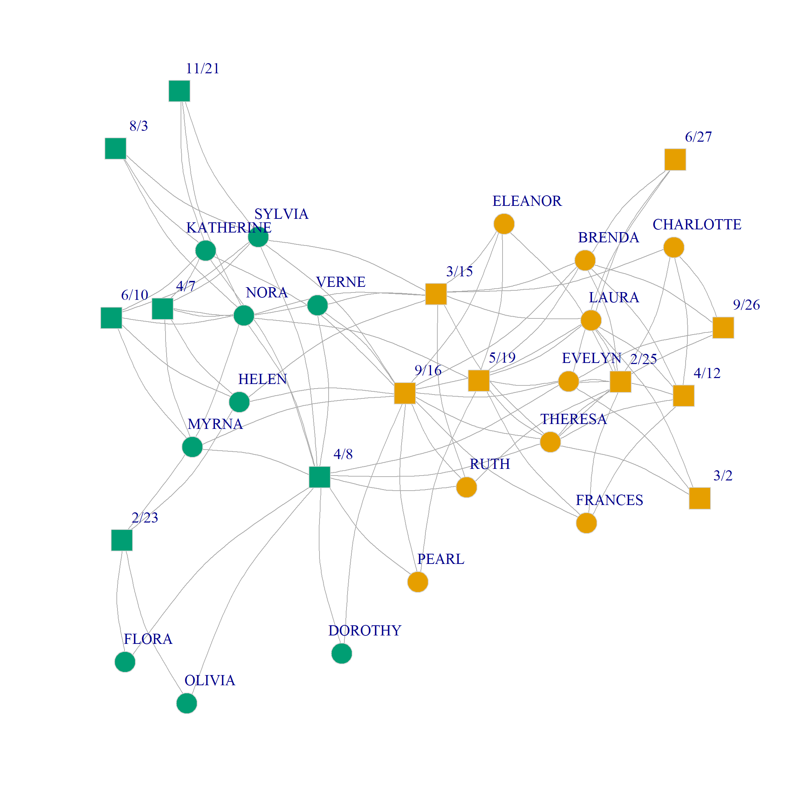

You may have noticed that the CA analysis of two-mode networks looks a lot like the identification of communities in one-mode networks. The main difference is that in a two-mode network, good communities are composed of clusters of persons and groups well-separated from other clusters of persons and groups.
As Barber (2007) noted, we can extend Newman’s modularity approach to ascertain whether a given partition identifies a good “community” in the bipartite case. For that, we need a bi-adjacency analog of the modularity matrix \(\mathbf{B}\). This is given by:
Where \(k^p_i\) is the number of memberships of the \(i^{th}\) person, \(k^g_i\) is the number of members of the \(j^{th}\) group, and \(|E|\) is the number of edges in the bipartite graph.
So in the Southern Women data case, this would be:
Code
library(networkdata)library(igraph)g <- southern_womenA <-as_biadjacency_matrix(g)dp <-as.matrix(rowSums(A))dg <-as.matrix(colSums(A))dpdg <- dp %*%t(dg) # person x group degree product matrixB <- A - dpdg /sum(A)round(B, 2)
Neat! Like before the numbers in this matrix represent the expected probability of observing a tie in a world in which people keep their number of memberships and groups keep their observed sizes, but otherwise, people and groups connect at random.
We can also create a bipartite matrix version of the bi-adjacency modularity, as follows:
Code
n <-vcount(g)Np <-nrow(A)names <-c(rownames(A), colnames(A))B2 <-matrix(0, n, n) # all zeros matrix of dimensions (p + g) X (p + g)B2[1:Np, (Np +1):n] <- B # putting B in the top right blockB2[(Np +1):n, 1:Np] <-t(B) # putting B transpose in the lower-left blockrownames(B2) <- namescolnames(B2) <- namesround(B2, 2)
Note that in \(\mathbf{\hat{B}}\) the modularity (expected number of edges) is set to zero for nodes of the same set (people and people; groups and groups), and to non-zero values for nodes of different sets (persons and groups).
Now, we can use the same approach we used in the unipartite case to check the modularity of some hypothetical partition of the nodes in the graph.
So let’s bring them back (using the CA function in the package FactoMineRand transform them into membership vectors (using dummy coding):
Code
library(FactoMineR)ca.res <-CA(A, graph =FALSE)eig.vec.p <- ca.res$row$coord[, 1] # CA scores for persons in first dim.eig.vec.g <- ca.res$col$coord[, 1] # CA scores for groups in first dimu1 <-rep(0, n)u2 <-rep(0, n)d <-c(eig.vec.p, eig.vec.g) # original CA scoresd <-Re(d)u1[which(d >0)] <-1u2[which(d <=0)] <-1U <-cbind(u1, u2)rownames(U) <-rownames(B2)U
Here’s a plot of the bipartite graph with nodes colored by the CA induced community bipartition:

Southern Women’s bipartite graph by the best two-community partition according to CA.
References
Barber, Michael J. 2007. “Modularity and Community Detection in Bipartite Networks.”Physical Review E—Statistical, Nonlinear, and Soft Matter Physics 76 (6): 066102.
Source Code
---title: "Community Detection in Two-Mode Networks Using CA"---You may have noticed that the [CA analysis of two-mode networks](tm-ca.qmd) looks a lot like the identification of communities in one-mode networks. The main difference is that in a two-mode network, good communities are composed of clusters of persons and groups well-separated from other clusters of persons and groups. As @barber07 noted, we can extend Newman's modularity approach to ascertain whether a given partition identifies a good "community" in the bipartite case. For that, we need a bi-adjacency analog of the modularity matrix $\mathbf{B}$. This is given by:$$\mathbf{B}_{(ij)} = \mathbf{A}_{(ij)} - \frac{k^p_ik^g_j}{|E|}$$Where $k^p_i$ is the number of memberships of the $i^{th}$ person, $k^g_i$ is the number of members of the $j^{th}$ group, and $|E|$ is the number of edges in the bipartite graph.So in the *Southern Women* data case, this would be:```{r}library(networkdata)library(igraph)g <- southern_womenA <-as_biadjacency_matrix(g)dp <-as.matrix(rowSums(A))dg <-as.matrix(colSums(A))dpdg <- dp %*%t(dg) # person x group degree product matrixB <- A - dpdg /sum(A)round(B, 2)```Neat! Like before the numbers in this matrix represent the expected probability of observing a tie in a world in which people keep their number of memberships and groups keep their observed sizes, but otherwise, people and groups connect at random. We can also create a bipartite matrix version of the bi-adjacency modularity, as follows:```{r}n <-vcount(g)Np <-nrow(A)names <-c(rownames(A), colnames(A))B2 <-matrix(0, n, n) # all zeros matrix of dimensions (p + g) X (p + g)B2[1:Np, (Np +1):n] <- B # putting B in the top right blockB2[(Np +1):n, 1:Np] <-t(B) # putting B transpose in the lower-left blockrownames(B2) <- namescolnames(B2) <- namesround(B2, 2)```Which is a bipartite version of modularity matrix ($\mathbf{\hat{B}}$) with the same block structure as the bipartite adjacency matrix:$$\mathbf{\hat{B}} = \left[\begin{matrix}\mathbf{O}_{M \times M} & \mathbf{B}_{M \times N} \\\mathbf{B}^T_{N \times M} & \mathbf{O}_{N \times N}\end{matrix}\right]$$Note that in $\mathbf{\hat{B}}$ the modularity (expected number of edges) is set to zero for nodes of the same set (people and people; groups and groups), and to non-zero values for nodes of different sets (persons and groups).Now, we can use the same approach we used in the unipartite case to check the modularity of some hypothetical partition of the nodes in the graph. Take for instance, the [CA scores in the first dimension that we saw in the lecture on CA](tm-ca.qmd). They do seem to divide the persons and groups into distinct communities. So let's bring them back (using the `CA` function in the package `FactoMineR`and transform them into membership vectors (using dummy coding):```{r}library(FactoMineR)ca.res <-CA(A, graph =FALSE)eig.vec.p <- ca.res$row$coord[, 1] # CA scores for persons in first dim.eig.vec.g <- ca.res$col$coord[, 1] # CA scores for groups in first dimu1 <-rep(0, n)u2 <-rep(0, n)d <-c(eig.vec.p, eig.vec.g) # original CA scoresd <-Re(d)u1[which(d >0)] <-1u2[which(d <=0)] <-1U <-cbind(u1, u2)rownames(U) <-rownames(B2)U```Recall that we can check the modularity of a partition coded in a dummy matrix like `U` using the formula:$$\frac{tr(U^TBU)}{\sum_i\sum_ja_{ij}}$$Where $tr$ is the trace matrix operation (sum of the diagonals).Let's check it out:```{r}A2 <-as.matrix(as_adjacency_matrix(g))round(sum(diag(t(U) %*% B2 %*% U)) /sum(A2), 3)```Which looks pretty good!Here's a plot of the bipartite graph with nodes colored by the CA induced community bipartition:```{r}#| fig-height: 12#| fig-width: 12#| fig-cap: Southern Women's bipartite graph by the best two-community partition according to CA.#| echo: falseV(g)$type <-bipartite_mapping(g)$typeV(g)$shape <-ifelse(V(g)$type, "square", "circle")V(g)$color <- (U[, 1] - U[, 2]) +2set.seed(123)plot(g,vertex.size =7, vertex.frame.color ="lightgray",vertex.label.dist =1.5, edge.curved =0.2,vertex.label.cex =1.35)```